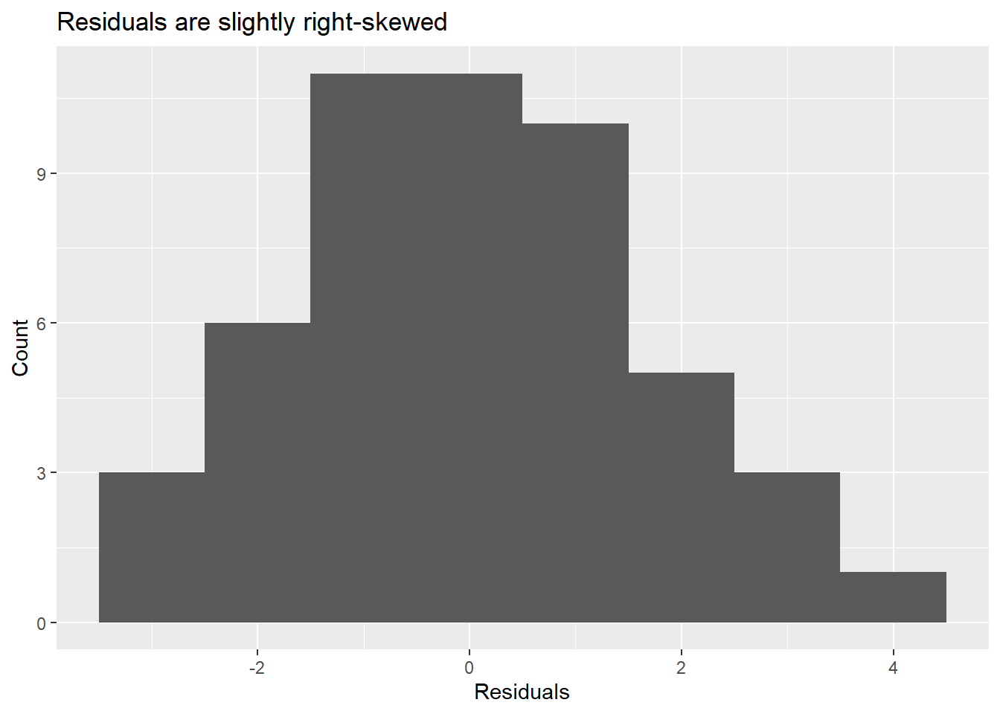
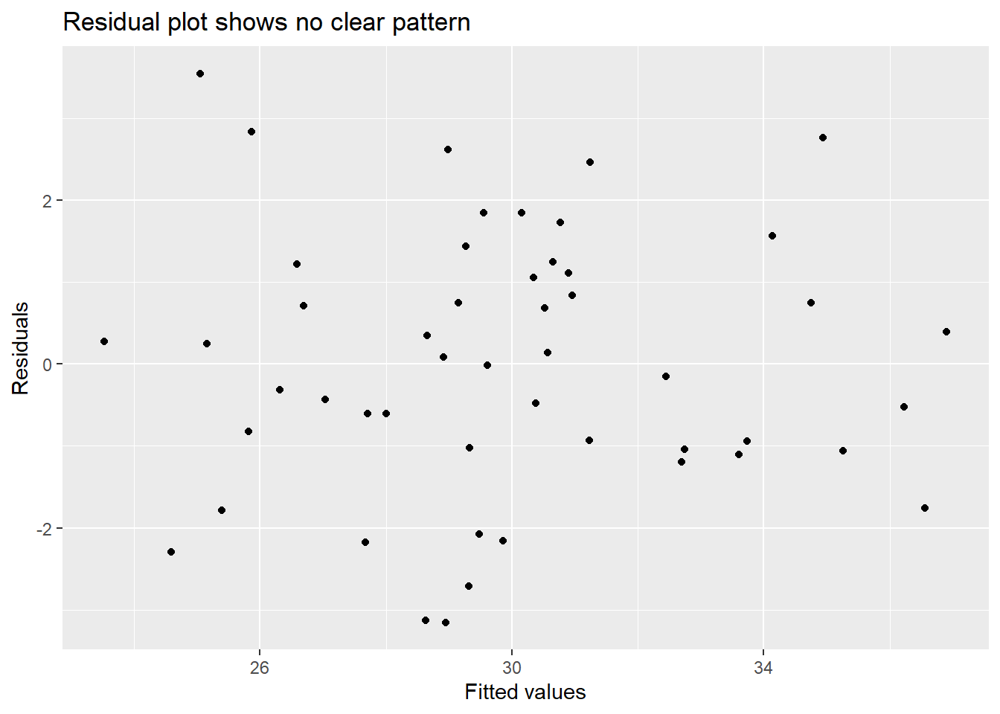

library(tidyverse)
library(broom)
library(kableExtra)Lab 8: Multiple Regression
Due: Friday, Apr 17, 2026 at 11:59PM
Set up
Open your RStudio project by going to File > Open Project. Select your BIOS 600 folder. (If you see a blue cube with your project name at the top right of your RStudio window, you’re good to go - you are already in your project folder.)
To begin, start a new Quarto file. Change the title to Lab 8. Keep the output as html.
“Save As” into your class project folder with a new name: “
lab-08.qmd”.Update your name and date in the YAML.
Render your document to make sure your YAML is rendering correctly.
TipData download
Download cdc.csv and beijing.csv and save into your Data folder within your BIOS 600 Project folder.
Loading libraries
Below you’ll find the packages needed for today’s lab. You may need to use install.packages first.
Fitting linear models
In R, we use the lm() function to fit linear models. It is often useful to save the “model object” as a separate object in order to use it for downstream analyses. In general, the syntax is
model <- lm(outcome ~ predictor1 + predictor2 + ..., data = dataset)Let’s read in the cdc data.
cdc <- read.csv("data/cdc.csv")Reminder: The variables in the cdc dataset are as follows:
State, the name of the stateRegion, the US Census region that each state belongs toHDI, the Human Development Index of each state in 2017, categorized into whether they are among the top ten, the bottom ten, or the middleInfantMortalityRate: infant mortality rate per 100,000CVDeathRate: death rate per 100,000 due to cardiovasulcar causesDrugDeathRate: death rate per 100,000 due to drug-related causes (ODs, etc.)MotorDeathRate: death rate per 100,000 due to motor vehicle-related causesCancerDeathRate: death rate per 100,000 due to cancerObesity: % of adults who are obeseSmoking: % of adults who smoked at least one cigarette in the past monthExercise: % of adults who participated in at least 2.5 hours of aerobic activity per weekSeatbelt: % of adults to regularly wear their seat beltFluVaccination: % of adults who received a flu vaccineChildVaccination: % of children who aged 19-35 months who have received the DTaP, polio, MMR, Hib, hepatitis B, varicella and PCV vaccinesUnder18: % of residents under age 18Over65: % of residents over age 65
Now let’s fit a linear model using the CDC data, where our response variable is obesity percentage and the three predictor variables are adequate exercise percentage, smoking percentage, and HDI category, and suppose we want to save it as the object mod1. We would use the following code:
mod1 <- lm(Obesity ~ Exercise + Smoking + HDI, data = cdc)Model estimates
First, let’s take a look at the model output with the tidy function. This function is applied to a linear model object such as the mod1 object we saved earlier:
tidy(mod1)# A tibble: 5 × 5
term estimate std.error statistic p.value
<chr> <dbl> <dbl> <dbl> <dbl>
1 (Intercept) 37.6 3.57 10.5 9.66e-14
2 Exercise -0.281 0.0539 -5.22 4.46e- 6
3 Smoking 0.431 0.0922 4.68 2.68e- 5
4 HDIMiddle -0.724 0.794 -0.912 3.67e- 1
5 HDITop ten -2.78 1.00 -2.77 8.07e- 3We see that the output provides columns containing our coefficient estimates, their standard errors, the t-statistic corresponding to each, and the p-value.
Note that R automatically recognized HDI as a categorical variable since its values are character strings, and created the appropriate dummy variables (treating the first category in alphabetical order as the baseline value). If you have a categorical variable that takes on numerical values, you can use the as.factor function in the model call to convert a variable into a categorical variable (which R will create dummy variables from). For instance:
model <- lm(outcome + predictor1 + as.factor(predictor2) + ..., data = dataset)As well, we can get model-specific values such as the \(R^2\), adjusted \(R^2\), the F-statistic (and corresponding p-value), and some other statistics by using the glance function applied to our model object. Note that the df given in the table is the numerator degrees of freedom for the overall F test.
glance(mod1)# A tibble: 1 × 12
r.squared adj.r.squared sigma statistic p.value df logLik AIC BIC
<dbl> <dbl> <dbl> <dbl> <dbl> <dbl> <dbl> <dbl> <dbl>
1 0.805 0.787 1.67 46.3 2.11e-15 4 -94.1 200. 212.
# ℹ 3 more variables: deviance <dbl>, df.residual <int>, nobs <int>Evaluating residuals
The augment() function from the broom package gives us some additional information relating to our linear model. Of primary interest are the fitted values and the residuals for each observation. The fitted values are the predicted response values given the values for our explanatory variables, and the residuals are the difference between the actual response data points and their fitted (predicted) values from the model.
Let’s apply the augment function to the mod1 object we created earlier, and save it as a new dataframe, mod1_res (which contains the residuals):
mod1_res <- augment(mod1)The variables .fitted and .resid (note the period) variables from this dataframe are what we will be using to evaluate some model assumptions. For instance, we could evaluate the normality of the residuals by plotting a histogram, or evaluate linearity/homogeneity of variances by plotting a scatterplot of the fitted values vs. the residuals.
For instance, we can create a ggplot histogram of the .resid to get a histogram of the residuals:
ggplot(data = mod1_res, mapping = aes(x = .resid)) +
geom_histogram(binwidth = 1) +
labs(x = "Residuals", y = "Count",
title = "Residuals are slightly right-skewed")
Or a scatterplot of the fitted values vs. the residuals (the residual plot):
ggplot(data = mod1_res, mapping = aes(x = .fitted, y = .resid)) +
geom_point() +
labs(x = "Fitted values", y = "Residuals",
title = "Residual plot shows no clear pattern")
Predicting new values
We can use our fitted values from our model to predict a new Obesity percent, given certain values of our predictors.
new_obs <- data.frame(
Exercise = 45,
Smoking = 18,
HDI = "Top ten")
# Predicted value with confidence interval
predict(mod1, newdata = new_obs,
interval = "confidence") fit lwr upr
1 29.95768 28.5452 31.37017Conclusion: Given a region with Exercise = 45%, Smoking = 18%, and given the region is in the Top ten HDI category, our model predicts an Obesity percentage of 29.957%.
Interactions
Interactions in models are made by simplifying multiplying two variables of interest together. As an example:
mod_int <- lm(outcome ~ var1 + var2 + var1 * var2, data = dataset)Note the var1*var2 term in the model above.
Exercise 1
Using the cdc dataset, consider the following model:
\[Obesity_i = \beta_0 + \beta_1Exercise_i + \beta_2Smoking_i + \beta_3(HDI == Middle)_i + \beta_4 (HDI == Top ten)_i + \epsilon_i\]
Fit the model using
lm(). Display the table of estimated regression coefficients usingtidy()andkable(), rounding to 3 digits.What is the interpretation of \(\hat \beta_2\)?
What is the interpretation of \(\hat \beta_4\)?
Atmospheric PM2.5
Atmospheric PM2.5 is fine particulate matter that has a diameter of less than 2.5 micrometers, and is one of the major air pollutants in the atmosphere. Such particles penetrate deep into the lungs due to their small size, and are associated with cardiovascular disease and other adverse health outcomes. Thus, higher PM2.5 levels imply lower air quality.
Scientists are interested in evaluating whether atmospheric PM2.5 levels can be predicted by weather patterns. Hourly data of PM2.5 readings from 2013-2017 were captured at a weather station at Nongzhanguan in Chaoyang District, Beijing. A modified subset of 1500 of these observations is given in the beijing dataset, which has been adapted from data provided by Dr. Songxi Chen at Peking University (Proc. Roy. Soc. A: 473(2205): 2017.0457 ).
Of interest are the following variables:
PM2.5: PM10 levels in micrograms per cubic meterTEMP: temperature in degrees CelsiusPRES: barometric pressure in in hPaDEWP: dew point in degrees CelsiusRAIN: hourly precipitation levels in mmwd: wind direction (eight compass points)
You may read in the data with the following code.
beijing <- read.csv(file = "data/beijing.csv")Exercise 2
Suppose we are interested in fitting a linear model that predicts PM2.5 levels based on the temperature, pressure, dew point, precipitation, and wind direction.
Using the
beijing.csvdataset, run the model usinglm(). Save it as a model object (choose a sensible name for the model object, likefit1ormod1, etc.) You may have to write your model on multiple lines for it to fit on the page – please check before submitting!Use the
augment()function to produce a new data frame which contains.fittedand.resid.Based on the data frame created in part (b), create a visualization of the fitted values vs. the residuals using
ggplot().Based on the plot from part (c), comment on the following: Does the equal variance assumption seem to be satisfied? Does the linearity assumption seem to be satisfied?
Based on the data frame created in part (b), produce a histogram of the residuals using
ggplot(). Does the normality assumption seem to be satisfied?
Exercise 3
Based on the model fit in Exercise 2, what PM2.5 level would you predict for a day with temperature of 11 degrees C, pressure of 1040 hPa, dew point of 5 degrees C, with no rain and wind coming from the south? To do this, create a new data frame with the given predictor values, and then use the predict function.
TipHint
To see how the dataset specifies wind direction (i.e. the character names of the different levels), use the following code:
table(beijing$wd)Exercise 4
Based on the model fit in Exercise 2, provide the coefficient estimates and a 1-sentence conclusion for the following values: the intercept, the slope corresponding to TEMP, and the slope corresponding to wdSW.
Exercise 5
Regardless of whether the assumptions in Exercise 2 are satisfied, we’d like to comprehensively evaluate the following question: is there sufficient evidence that there is a relationship between barometric pressure and PM2.5 levels, while adjusting for temperature, dew point, rain, and wind direction? To do so, do the following:
State your null and alternative hypotheses in words or symbols.
State the test statistic’s distribution under the null hypothesis (include name of distribution and degrees of freedom).
State your p-value and a 1-sentence conclusion. Assume \(\alpha = 0.05\).
Tip
Note: the t statistic for a single predictor in a multiple regression model follows a \(t\)-distribution with \(𝑛−𝑘\) degrees of freedom, where \(n\) is the number of observations, and \(k\) is the number of parameters being estimated (including the intercept).
Exercise 6
Given the model in Exercise 2:
What would be the expected difference in PM2.5 levels given a one degree increase in dewpoint? (1-sentence)
Compute the adjusted \(R^2\) value from the model in Exercise 2 using
glance(). Provide a 1-sentence interpretation of the adjusted \(R^2\) value.
AI Attestation
Was AI used on this assignment? If so, describe your prompts below. If not, simply state “AI was not used on this assignment.”
Submission
As you’ve seen previously, we can Render the template into an .html file that can be opened by any web browser. To export it as a .pdf, open the file in your web browser and then print to or save as a .pdf document. Your TAs will show you how if you need help! (There is a way to directly knit to a .pdf file, but it’s quite a bit more involved.)
You will submit the PDF documents for labs and homework to Gradescope as part of your final submission.
To submit your assignment:
Access Gradescope through the menu on the BIOS 600 Canvas site.
Click on the assignment, and you’ll be prompted to submit it.
Mark the pages associated with each exercise. All of the pages of your lab should be associated with at least one question (i.e., should be “checked”).
Select the first page of your .PDF submission to be associated with the “Formatting” section.
Grading
| Component | Points |
|---|---|
| Ex 1 | 6 |
| Ex 2 | 7 |
| Ex 3 | 2 |
| Ex 4 | 3 |
| Ex 5 | 5 |
| Ex 6 | 2 |
| AI Attestation | 1 |
| Formatting | 3 |
The “Formatting” grade is to assess the document format. This includes having a neatly organized document (no excessive output, warnings/messages when loading packages and/or data) with readable code and your name and the date updated in the YAML.